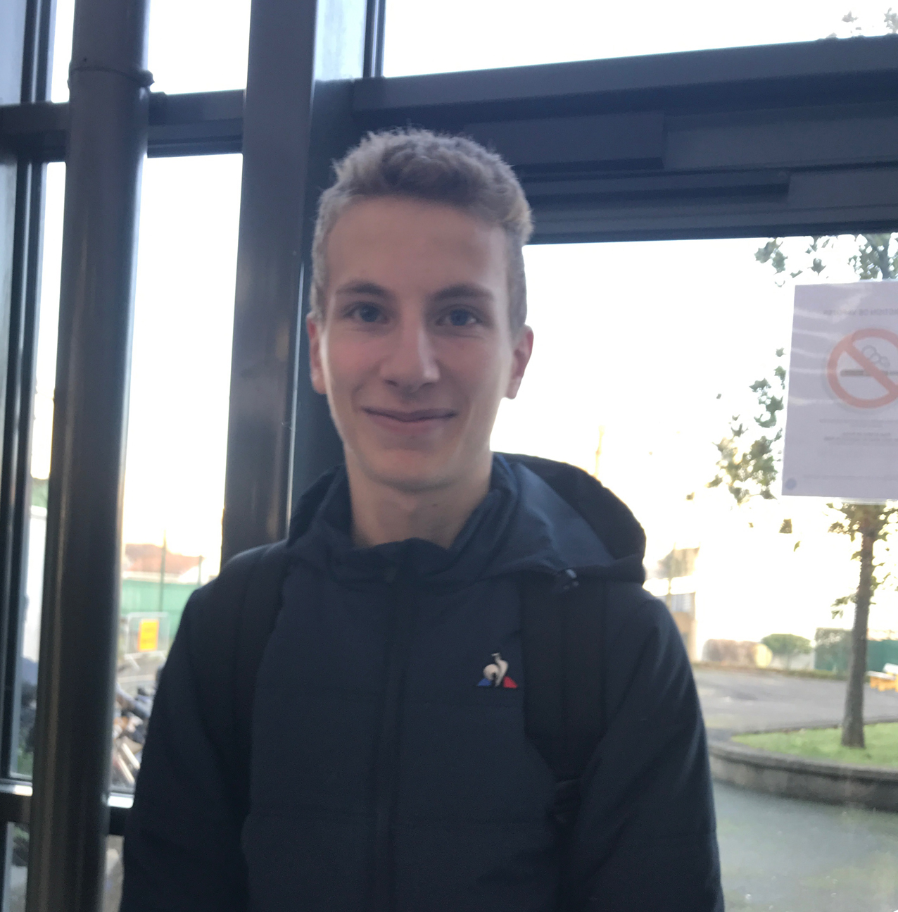

The Valentin and Maxence's story
Valentin - 34 yo:
Scubadiving instructor ; saved Maxence from death...
Maxence - 25 yo:
Was in Miami during hollidays and scubadived with Valentin when he met a SHARK !
THE STORY:
Maxence and Valentin were scubadiving not far from Miami ; but a big wave tooks Maxence away "I was feeling lost" said Maxence during an interview for the BBC Radio ; He tryed to find an eye contact with the boat but a shark attacked him... "I was scared" so he decided to swam fast as he could... The problem is: it's the worst behavior you can have in front of a shark... "Actually you have 99.9% the shark follow you and bit you" told us Valentin...
That's what happened to Maxence ; he was bitten at the right leg... Fortunetly, seeing the blood, Valentin came to Maxence, the shark wasn't there... He was putting him on the boat when the shark came back slowly. Valentin quickly made an eye contact to show to the shark he had saw it ; so the shark slowed down but continued to approach ; so Valentin took a hard object an showed it to the shark ; then the shark touch thos object and stopped to approach ; to finish Valentin came back to the boat slowly continuing to watch the shark in the eyes...
THE FEW TIPS AGAINST SHARK ATTACK
1) Make an eye contact with the shark contact
2) Show to the shark you've seen it
3) Then the shark will slow down or it'll just leave if it's a fearful one (if it does that direcly go to the 7th step)
4) If it continues to approach take a hard object an show it to the shark.
5) It will taste the object.
6) Thinking it's a part of you it will see you're not a prey and it'll simply leave or stop to approach you.
7) Next came back to your boat or the beach continuing to watch the shark in the eyes if it hasn't leaved.